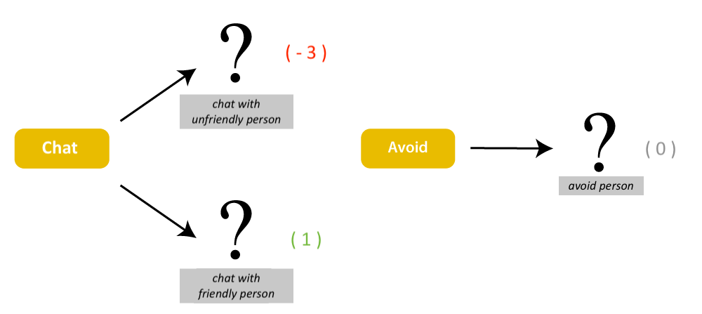
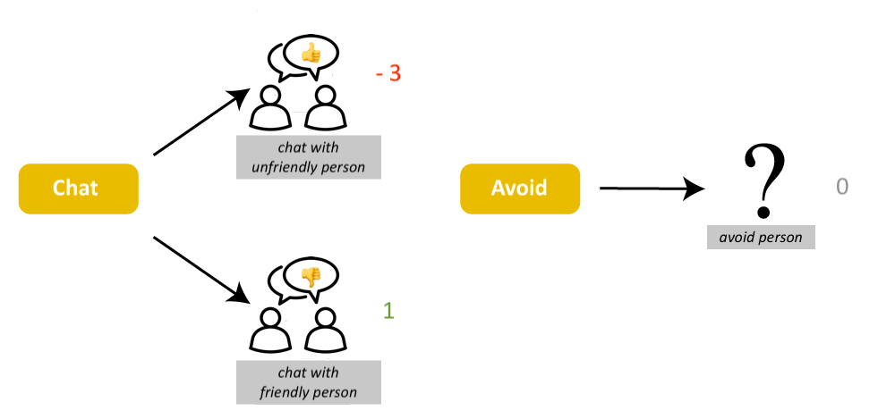
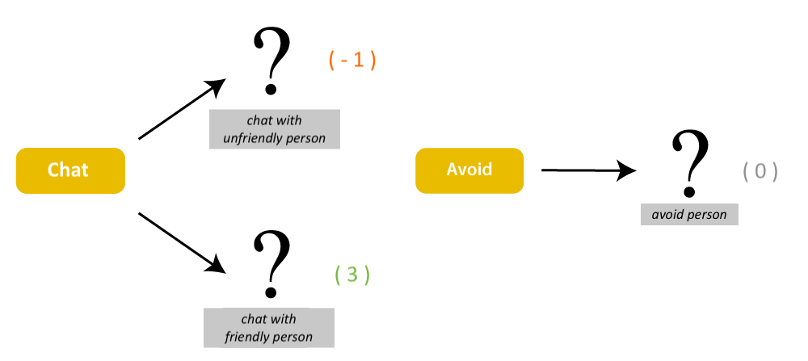
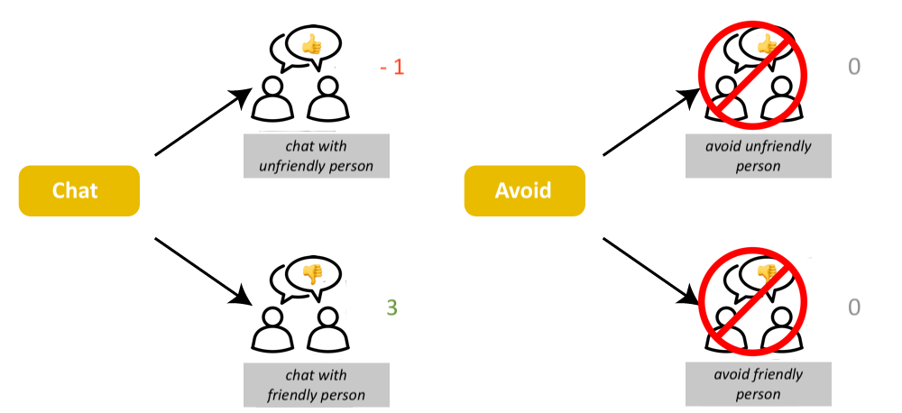

<!DOCTYPE html>

<html>
  <head>
    <meta charset="utf-8">
    <meta name="viewport" content="width=device-width, initial-scale=1, shrink-to-fit=no">
    <title>UNSW Mixer Party Game</title>
    <script src="./js/jspsych.js"></script>
    <script src="./js/plugins/jspsych-fullscreen.js"></script>
    <script src="./js/plugins/jspsych-instructions.js"></script>
    <script src="./js/plugins/jspsych-html-keyboard-response.js"></script>
    <script src="./js/plugins/jspsych-html-button-response.js"></script>
    <script src="./js/plugins/jspsych-image-keyboard-response.js"></script>
    <script src="./js/plugins/jspsych-external-html.js"></script>
    <script src="./js/plugins/jspsych-survey-html-form.js"></script>
    <script src="./js/welcome.js"></script>
    <script src="./js/jquery.min.js"></script>
    <link href="./js/css/jspsych.css" rel="stylesheet" type="text/css"></link>
  </head>

  <body>
    <div id="welcome"></div>
  </body>


  <script>


  // run the welcome
  welcome.run();


    // -------- Set up --------
    /* initialise timeline*/
    var timeline=[];
    var introloop=[];
    var turkcode = 'C' + (Math.floor(Math.random() * 899999) + 100000).toString();
    var filename = "unsw-learningbees-v1_"+ turkcode;
	  var images = [
      './img/instr_outcomes_fullFL.png',
      './img/instr_outcomes_fullFG.png',
      './img/instr_outcomes_partialFL.png',
      './img/instr_outcomes_partialFG.png',
      './img/instr_outcomes_test-fl.png',
      './img/instr_outcomes_test-fg.png',
  
	   ];

      // Code which stops participants from refreshing (or leaving the page) without a warning
      window.onbeforeunload = function(){
        return "Are you sure you want to leave the experiment?";
      };
	  
    
	function startExperiment(){

      // record the turkcode in the jsPsych data
      jsPsych.data.addProperties({
        turkcode: turkcode,
        targetComb: targetComb,
        feedback: feedback,
        valence: valence,// frequent gain condition
        browserinfo: navigator.userAgent, 
      });
         
      function saveData(name, data){
        var xhr = new XMLHttpRequest();
        xhr.open('POST', 'save_data.php');
        xhr.setRequestHeader('Content-Type','application/json');
        xhr.send(JSON.stringify({filename: filename, filedata: data}));
      };
   

      jsPsych.init({
        timeline: timeline,
        preload_images: images,
        /*on_finish: function() {
          jsPsych.data.get().localSave('csv','test.csv')
         }, // uncomment to locally save data file */
        show_progress_bar: false,
        auto_update_progress_bar: false,
        on_finish: function(data){
			    saveData(filename, jsPsych.data.get().csv());
			    document.write('<div id="endscreen" class="endscreen" style="width:1000px"><div class="endscreen" style="text-align:center; border:0px solid; padding:10px; font-size:120%; width:800px; float:right"><p><br><br><br>All done!<br><br>Your completion code is <span id="turkcode" style="font-weight:bold;font-size:130%">' + turkcode + '</span>. To receive payment for the HIT, return to the Amazon Mechanical Turk page and enter this code. Please contact us if something goes wrong and we\'ll fix it as quickly as possible.</p></div></div>')
		    }
      });

    } 


    // function to end the experiment
    function endExperiment(dataset,callback) {
      // $.post('submit',{"content": dataset}); // uncomment to post data
      console.log(dataset) // comment out to avoid console log
      setTimeout(callback,1000)
      // setTimeout specifies after a certain no of milliseconds
    }


    // -------- set up accumulating variables
    var trialLP = 0; // for showing the next learning phase bee
    var trialTP = 0; // for showing the next test phase bee
    
    
    // -- for points
    var pointsInitial = 50;
    var pointsAdded = 0;
    var totalPoints = 0;

    function addNum(pointsInitial,pointsAdded){
      return pointsInitial+pointsAdded
    };
    var pointsCurrent = addNum(pointsInitial,pointsAdded);

    pointsCurrent = addNum(pointsCurrent,pointsAdded);


// ------- Feedback Condition
var feedback = ['full', 'partial'];
var feedback = jsPsych.randomization.sampleWithoutReplacement(feedback, 1)[0]; // randomly select a feedback condition

// ------- Loss condition
var valence = ['freqGain', 'freqLoss']
var valence = jsPsych.randomization.sampleWithoutReplacement(valence, 1)[0]; // randomly select a valence condition

 
// set value from approaching target stimuli depending on valence/loss condition
if (valence == 'freqGain'){
  targetVal = -3
  nonTargetVal = 1
  friendVal = 1
  unfriendVal = -3
  instrTestImg = '<p></img></p>'
  // instruction images
  if (feedback == 'partial'){
    outcomeImg = '<p></img></p>'
    outcomeText = '<p>If you choose to avoid a person, you won\'t gain or lose any points, and you won\'t find out whether the person was friendly or unfriendly.</p>'
  } else {
    outcomeImg = '<p></img></p>'
    outcomeText = '<p>If you choose to avoid a person, you won\'t gain or lose any points, but you\'ll still find out whether the person was friendly or unfriendly.</p>'
  }
} else if (valence == 'freqLoss'){
  targetVal = 3
  nonTargetVal = -1
  friendVal = 3
  unfriendVal = -1
  instrTestImg = '<p></img></p>'
  //instruction images
  if (feedback == 'partial'){
    outcomeImg = '<p></img></p>'
    outcomeText = '<p>If you choose to avoid a person, you won\'t gain or lose any points, and you won\'t find out whether the person was friendly or unfriendly.</p>'
  } else {
    outcomeImg = '</img></p>'
    outcomeText = '<p><p>If you choose to avoid a person, you won\'t gain or lose any points, but you\'ll still find out whether the person was friendly or unfriendly.</p>'
  }

}

// -------- Randomisation set up

function shuffle(array) {
    var currentIndex = array.length, temporaryValue, randomIndex;

    // While there remain elements to shuffle...
    while (0 !== currentIndex) {

      // Pick a remaining element...
      randomIndex = Math.floor(Math.random() * currentIndex);
      currentIndex -= 1;

      // And swap it with the current element.
      temporaryValue = array[currentIndex];
      array[currentIndex] = array[randomIndex];
      array[randomIndex] = temporaryValue;
    }

    return array;
  }

  // ------- Character profile stimuli

  var propPairs = shuffle([
    ["serious", "casual"],
    ["indecisive", "decisive"],
    ["inquisitive", "noninquisitive"],
    ["realist", "idealist"]
  ])

  // assign each property pair to a dimension

  var A0 = propPairs[0][0]
  var A1 = propPairs[0][1]
  var B0 = propPairs[1][0]
  var B1 = propPairs[1][1]
  var C0 = propPairs[2][0]
  var C1 = propPairs[2][1]
  var D0 = propPairs[3][0]
  var D1 = propPairs[3][1]

  // ------- Permutation for relevant dims
  var targetComb = shuffle([
    [A1, B1],
    [A0, B1],
    [A1, B0],
    [A0, B0]// A/B/C/D dimensions are randomly assigned to trait dimensions
  ])[0]

  // function to decide if a stimulus shown was a target combination/conjunction stimulus
  // if bee image name includes these two dimension/value combinations then it's the target combination
  // returns TRUE or FALSE
  function isConjunctionBee(lastBee){
    console.log(lastBee)
    console.log(targetComb)
    return lastBee.includes(targetComb[0]) && lastBee.includes(targetComb[1])
  };

  var bees_OG = shuffle([ // 16 stimuli combinations 
    [A0, B0, C0, D0],
    [A0, B0, C0, D1],
    [A0, B0, C1, D0],
    [A0, B0, C1, D1],
    [A0, B1, C0, D0],
    [A0, B1, C0, D1],
    [A0, B1, C1, D0],
    [A0, B1, C1, D1],
    [A1, B0, C0, D0],
    [A1, B0, C0, D1],
    [A1, B0, C1, D0],
    [A1, B0, C1, D1],
    [A1, B1, C0, D0],
    [A1, B1, C0, D1],
    [A1, B1, C1, D0],
    [A1, B1, C1, D1]
  ]);

// depending on permutation, which are the dangerous and friendly bees
// i.e. conjunction bees

conjunctionBees = [];

for (var i = 0; i < 16 ; i++){
  if (bees_OG[i].includes(targetComb[0]) && bees_OG[i].includes(targetComb[1])){
    conjunctionBees.push(bees_OG[i])
  }
} // returns conjunctionBees as 4 target arrays e.g., 4 of ['serious', 'inquisitive', 'realist', 'decisive']

// show 6 friendly and 2 dangerous bees every 8 bees

function makeBees(){ 

  var bees_target =  shuffle(conjunctionBees); // shuffle conjunction/target bees (4/16)
  var bees_nonTarget = bees_OG.filter(function(item) {
    return !conjunctionBees.includes(item); 
  }); // what is left over of all bees excluding the dangerous ones. i.e., friendly bees 
  var bees_nonTarget = shuffle(bees_nonTarget); // shuffle friendly bees (12/16)

  var bees_target_1 = bees_target.slice(0,2); //dangerous bees for first subblock of block, 2 dangerous
  var bees_nonTarget_1 = bees_nonTarget.slice(0,6); // friendly bees for first subblock of block, 6 friendly
  var bees_target_2 = bees_target.slice(2,); // '' for second subblock of block, 2 dangerous
  var bees_nonTarget_2 = bees_nonTarget.slice(6,); // '' for second subblock of block, 6 friendly

  var first_subblock = shuffle(bees_target_1.concat(bees_nonTarget_1)) // combine friendly and dangerous and shuffle to form first subblock
  var second_subblock = shuffle(bees_target_2.concat(bees_nonTarget_2))//combine friendly and dangerous and shuffle to form second subblock

  var beesStim = first_subblock.concat(second_subblock);
  return beesStim;

};

var bees = []; // initiate bees array

for (var j = 0; j < 10; j++) {
  bees = bees.concat(makeBees());  // now repeat the makeBees function 10 times, concatenating each time
}                           
                                 
// take the first 128 bees for learning phase, leave 32 for test phase.

var LP_bees = bees.slice(0,128); // Learning phase bees
var TP_bees = bees.slice(128,); // Test phase bees

// -------- Enter fullscreen
timeline.push({
  type: 'fullscreen',
  fullscreen_mode: true,
  message: "<p>The experiment will switch to full screen mode when you press the button below.</p>" +
  "<p>You will first read some instructions. Please note that you may need to scroll down to the bottom of the page to view all the instructions.</p>"
});

var instr1 = '<p>Welcome to the Mixer Party game!</p>'+
'Please pay attention to the following instructions.</p>'

var instr2 = '<p>Imagine that you are attending a “meet your colleagues” mixer party after you have started a new job in a large company or started a new course at University.</p>' +
'<p>At the party you will have the opportunity to meet with a variety of people (128  in total).</p>'

var instr3 = '<p>Some people you will meet and interact with at the party will be friendly. In this game, interacting with a friendly person will earn you points (+' + friendVal + ' point).</p>' +
'<p>But some of the people at the party are unfriendly. In this game, interacting with an unfriendly person is really unpleasant and will cause you to lose points (' + unfriendVal +' point).</p>' +
outcomeText + 
outcomeImg

var instr4 = '<p>Each point you score adds to your bonus for the experiment. Each point you lose subtracts from your bonus.</p>' +
'<p>You will begin with a bonus of 50 points.</p>'

var instr5 = '<p>Before you decide to approach or avoid each person you will learn some things about them.</p>' +
'<p>You will learn about their...</p>' +
'<p><i>Seriousness:</i>  Serious or Casual</p>' +
'<p><i>Decisiveness:</i> Decisive or Indecisive </p>' +
'<p><i>Inquisitiveness:</i>  Inquisitive or Noninquisitive</p>' +
'<p><i>Idealism:</i>  Realist or Idealist</p>'

var instr6 = '<p>Using these profiles, it is possible the learn to predict which people at the party are friendly and which people are unfriendly.</p>' +
'<p>The features that determine which type of people are friendly or unfriendly are stable and will not change over the course of the experiment.</p>'

var instr7 = '<p>IMPORTANT HINT</p>' +
'<p>Based on your past experience you may already have views about the sorts of people that may be friendly or unfriendly. This will NOT help you in this game.</p>'

var instr8 = '<p>As you proceed, you will be told how many points you have earned so far.</p>' +
'<p>Your monetary bonus is based on your points balance at the end of this task. <br> However, please note that if your final points balance is negative, this will not lead to a deduction to your base rate of pay.</p>'

var instrTest = '<p>You will now see a final set of people at the party.</p>' +
  '<p>As before, you will see each person and decide whether to approach or avoid them.</p>' +
  '<p>There have been no changes to the features that affect whether the person is friendly or unfriendly.</p>' +
  '<p>Just like before, each friendly person you approach adds ' + friendVal + ' point to your bonus; <br>each unfriendly person you approach subtracts ' + unfriendVal + ' point; <br>and avoiding a person adds 0 points. </p>' +
  '<p>However, you will no longer see whether the people you approach are friendly or unfriendly, and you won’t see any changes to your bonus.</p>' +
  instrTestImg

  // -------- Instructions & quiz --------
var instrIntro = {
    type: 'instructions',
    pages: [instr1, instr2, instr3, instr4, instr5, instr6, instr7, instr8],
    show_clickable_nav: true,
    allow_backward: true,
};

introloop.push(instrIntro)

// baseline for the instructionscorrect variable
var instructioncorrectFull = false;
var instructioncorrectPartial = false;

// correct answers based on feedback
var ansFull = '{"Idealism":"checked","Seriousness":"checked","Decisiveness":"checked","Inquisitiveness":"checked","change":"no","telldangerous":"feature","avoidinfo":"info"}';
var ansPartial = '{"Idealism":"checked","Seriousness":"checked","Decisiveness":"checked","Inquisitiveness":"checked","change":"no","telldangerous":"feature","avoidinfo":"noInfo"}';

// comprehension check
var quiz = {
  type:'survey-html-form',
  html: '<pBefore beginning the experiment, you must answer a few simple questions to ensure you have read the instructions. If you do not answer all questions correctly, you will be returned to the start of the instructions and have a chance to retake this quiz.</p>' +
  '<p>Which of the following are features of people that you\'ll learn about from their profiles?</p>' +
  '<input type="checkbox" name="Idealism" value="checked">Realist or Idealist <br> ' +
  '<input type="checkbox"  name="Calmness" value="checked">Calm or Excitable <br>' +
  '<input type="checkbox"  name="Conformity" value="checked">Conformist or Radical <br>' +
  '<input type="checkbox"  name="Seriousness" value="checked">Serious or Casual <br>' +
  '<input type="checkbox"  name="Outspokenness" value="checked">Outspoken or Reserved <br>'+
  '<input type="checkbox"  name="Decisiveness" value="checked">Decisive or Indecisive <br>' +
  '<input type="checkbox"  name="Meticulousness" value="checked">Scatter-brained or Meticulous <br>' +
  '<input type="checkbox" name="Inquisitiveness" value="checked">Inquisitive or Noninquisitive' +
  '<p>Can the features that determine which type of people are friendly or unfriendly change over time?</p>' +
  '<select id="change" name="change" class="form-control">' +
  '   <option value="noresp" SELECTED></option>' +
	'   <option value="yes">yes</option>' +
	'   <option value="no">no</option>' +
  '</select> <br>' +
  '<p>How can you learn to tell whether a person is friendly or unfriendly?</p>' +
  '<select id="telldangerous" name="telldangerous" class="form-control">' +
  '   <option value="noresp" SELECTED></option>' +
	'   <option value="color">Based on the names of people in their profiles</option>' +
	'   <option value="feature">Based on the features of people in their profiles</option>' + 
  '   <option value="smoke">Based on the order in which you see the different profiles</option>' +
  '</select> <br>' +
  '<p>What happens when you avoid a person?</p>' +
  '<select id="avoidinfo" name="avoidinfo" class="form-control">' +
  '   <option value="noresp" SELECTED></option>' +
	'   <option value="noInfo">You do not learn if they were friendly or unfriendly, and do not alter your bonus.</option>' +
	'   <option value="info">You learn if they were friendly or unfriendly, but do not alter your bonus.</option>' +
	'   <option value="infoPlusBonus">You learn if they were friendly or unfriendly and alter your bonus.</option>' +
  '</select> <br><br>'
,
  preamble: 'Comprehension Check',
  button_label: 'Submit',
  on_finish: function(data){
    if(feedback == 'partial' && data.responses == ansPartial) {
            return instructioncorrect = true;
          } else if (feedback == 'full' && data.responses == ansFull) {
            return instructioncorrect = true;
          } else {
            return instructioncorrect = false;
          }
  }
};

// conditional instructions-quiz sequence based on full/partial feedback

introloop.push(quiz);

var showsplash = true;
var splash_screen = {
  type: 'html-button-response',
  timing_post_trial: 0,
  choices: ['Click here to read the instructions again'],
  on_trial_start: function() {setTimeout(function() {setDisplay("jspsych-btn","")}, 500)},
  is_html: true,
  stimulus: "Oh no! At least one of your answers was incorrect. Let's try again."
}

/* ...but push it to a conditional node that only shows it if the response was wrong */
var conditional_splash = {
  timeline: [splash_screen],
  conditional_function: function(data) {
    return !instructioncorrect // skip if correct
  }
}

introloop.push(conditional_splash);

/* finally, add the entirety of this introductory section to a loop node ... */

var loop_node = {
  timeline: introloop,
  loop_function: function(data) {
    return !instructioncorrect // stop looping if correct
  }
};

timeline.push(loop_node);

/* success trial */

var successtrial = {
  type: 'html-button-response',
  timing_post_trial: 0,
  choices: ['Click here to begin the experiment'],
  on_trial_start: function() { setTimeout(function() {setDisplay("jspsych-btn","")}, 500)},
  is_html: true,
  stimulus: '<p>Well done! This is now the last page of instructions.</p> <p>You\'re going to start experiment now.</p>'
};
timeline.push(successtrial); 

// --------------- SET UP FOR MAIN TASK
// functions for feedback displays

function showActualPoints(){
    var lastChoice = jsPsych.data.get().last(1).values()[0].button_pressed; // get last avoid/approach decision
    var lastBee = jsPsych.data.get().last(1).values()[0].stimulus; // get last bee shown
    // change based on dim permutation
    if (lastChoice == 0 && (isConjunctionBee(lastBee))) { 
      return pointsAdded = targetVal; // change depending on loss condition
    } else if (lastChoice == 0){
      return pointsAdded = nonTargetVal;
    } else {
      return pointsAdded = 0;
    }
  };

function showForgonePoints(){
  var lastChoice = jsPsych.data.get().last(1).values()[0].button_pressed; // get last avoid/approach decision
  var lastBee = jsPsych.data.get().last(1).values()[0].stimulus; // get last bee shown   
  // change based on dim permutation
  if (isConjunctionBee(lastBee)) { // if a target stimulus/combination bee
      return pointsForgone = targetVal; // then show approached value for target bees -- change depending on loss condition
    } else {
      return pointsForgone = nonTargetVal;
  } 
};

function ffAvoidFeedback(){
  showForgonePoints();
  if (pointsForgone < 0) { // change depending on loss condition
    return "Whew, you avoided an unfriendly person. You earned <b>" + pointsAdded + " </b> points."
  } else if (pointsForgone > 0) {
    return "Oops, you avoided a friendly person. You earned <b>" + pointsAdded + " </b>points."
  }
};


// -------- the experiment itself -------

// the learning phase
var decision_LP = {
    type: 'html-button-response',
    stimulus: function(){
      return '<p><b>Profile of Person '+ String(Number(Number(trialLP)+1)) + '</b></p>' +
      '<p>'+ LP_bees[trialLP][0] + '</p>' +
      '<p>' + LP_bees[trialLP][1] + '</p>' +
      '<p>' + LP_bees[trialLP][2] + '</p>' +
      '<p>' + LP_bees[trialLP][3] + '</p>' 
    },
    prompt: "Chat with this person?",
    choices: ['Yes please.', 'No thanks.'],
    on_finish: function(data){
      trialLP = trialLP + 1;
      data.trialLP = trialLP;
      return showActualPoints();
    },
    counter_displayed: function(data){
      return pointsCurrent;
    },
};


var feedbackPartial = {
  type: 'html-keyboard-response',
  is_html:true,
  choices: jsPsych.NO_KEYS,
  trial_duration: 2000,
  stimulus: function(){
    if (pointsAdded == 0) {
      return "You avoided this person. You earned <b>" + pointsAdded + " </b>points."
    }
    else if (pointsAdded > 0){ // change depending on loss condition
      if (pointsAdded > 1) {
        return "You chatted with a friendly person! You earned <b>" + pointsAdded + " </b>points." // plural form
      } else {
        return "You chatted with a friendly person! You earned <b>" + pointsAdded + " </b>point." // otherwise 1 point, so singular form
      }
    } else {
      if (pointsAdded < -1){
        return "Oh no, you chatted with an unfriendly person! You lost <b>" + pointsAdded + " </b>points." // plural form
      } else {
        return "Oh no, you chatted with an unfriendly person! You lost <b>" + pointsAdded + " </b>point." // singular form
      }
    }
  },
  on_finish: function(data){
    pointsCurrent = pointsCurrent + pointsAdded;
    data.earnedThis = pointsAdded;
    data.earnedCumulative = pointsCurrent;
    data.trialLP = trialLP;
  }
};

var feedbackFull = {
  type: 'html-keyboard-response',
  is_html:true,
  choices: jsPsych.NO_KEYS,
  trial_duration: 2000,
  on_start: function(){
    return pointsAdded;
  },
  stimulus: function(){
    if (pointsAdded > 0){ // change depending on loss condition
      if (pointsAdded > 1){
        return "You chatted with a friendly person! You earned <b>" + pointsAdded + " </b>points." // plural form
      } else {
        return "You chatted with a friendly person! You earned <b>" + pointsAdded + " </b>point."
      }
    } else if (pointsAdded < 0){ 
      if (pointsAdded < -1){
        return "Oh no, you chatted with an unfriendly person! You lost <b>" + pointsAdded + " </b>points." //plural form
      } else {
        return "Oh no, you chatted with an unfriendly person! You lost <b>" + pointsAdded + " </b>point." //singular form
      }
    } else {
      return ffAvoidFeedback()
    }
  },
  on_finish: function(data){
    pointsCurrent = pointsCurrent + pointsAdded;
    data.earnedThis = pointsAdded;
    data.earnedCumulative = pointsCurrent;
    data.trialLP = trialLP;
  }
};


// conditional thing for trials timeline
function conditionalTimeline(){
  if (feedback == 'partial'){
    return [decision_LP, feedbackPartial];
  } else {
    return [decision_LP, feedbackFull];
  }
};

//
var learningPhase = {
  timeline: conditionalTimeline(),
  repetitions: 16, //128, 
  randomize_order: false
};
          
timeline.push(learningPhase);

var TP_instructions = {
    type: 'instructions',
    pages: [instrTest],
    show_clickable_nav: true,
    allow_backward: false,
};

timeline.push(TP_instructions);

// the test phase
var decision_TP = {
      type: 'html-button-response',
      stimulus: function(){
      return '<p><b>Profile of Person '+ String(Number(Number(trialTP)+1)) + '</b></p>' +
      '<p>'+ TP_bees[trialTP][0] + '</p>' +
      '<p>' + TP_bees[trialTP][1] + '</p>' +
      '<p>' + TP_bees[trialTP][2] + '</p>' +
      '<p>' + TP_bees[trialTP][3] + '</p>' 
    },
      prompt: "Chat with this person?",
      choices: ['Yes please.', 'No thanks.'],
      on_finish: function(data){
        trialTP = trialTP + 1;
        data.trialTP = trialTP;
      },
  };

var feedbackTP = {
  type: 'html-keyboard-response',
  is_html:true,
  choices: jsPsych.NO_KEYS,
  trial_duration: 1400,
  on_start: function(){
    var lastChoice = jsPsych.data.get().last(1).values()[0].button_pressed; // get last avoid/approach decision
    var lastBee = jsPsych.data.get().last(1).values()[0].stimulus; // get last bee shown
    // change based on  permutation
    if (lastChoice == 0 && (isConjunctionBee(lastBee))) { 
      return pointsAdded = targetVal; // change depending on loss condition
    } else if (lastChoice == 0){
      return pointsAdded = nonTargetVal;
    } else {
      return pointsAdded = 0;
    }
  },
  stimulus: '', 
  on_finish: function(data){
    pointsCurrent = pointsCurrent + pointsAdded;
    data.earnedThis = pointsAdded;
    data.earnedCumulative = pointsCurrent;    
    data.trialTP = trialTP;
  }
};

var testPhase = {
  timeline: [decision_TP, feedbackTP],
  repetitions: 8, //32,
  randomize_order: false,
};

timeline.push(testPhase);
  
// posttask questionnaire

// randomise order of posttest questions
var beeEstimateQ = [
  "Imagine that 10 people were randomly chosen from the ones that you just learned about. About how many of those would be unfriendly? (Enter a value between 0 and 10.)",
  "Imagine that 10 people were randomly chosen from the ones that you just learned about. About how many of those would be friendly? (Enter a value between 0 and 10.)",
];

var beeEstimateQ = jsPsych.randomization.sampleWithoutReplacement(beeEstimateQ, 2);


var endquestions_1 = {
  type: 'survey-html-form',
  preamble: '<b>You\'ve finished the Mixer Party Game! Congratulations!</b>',
  html: '<p> We have a couple of short questions before you complete the experiment. You will be eligible for payment once you answer the following questions. </p>'+
  '<p><b>Q1.</b> ' + beeEstimateQ[0] + '</p>' +
  '<input type="number" min="0" max="10"  onKeyUp="if(this.value>10){this.value=\'10\';}else if(this.value<0){this.value=\'0\';}" id="estimateQ1" name="estimateQ1" required> <br> <br>',
  button_label: 'Continue',
  on_finish: function(data){
    data.estimateQ = beeEstimateQ[0].substring(132,138) // record whether question was about "friend" or "danger"
  },
};

var endquestions_2 = {
  type: 'survey-html-form',
  preamble: '<b>You\'ve finished the Mixer Party Game! Congratulations!</b>',
  html: '<p><b>Q2. </b>' + beeEstimateQ[1] + '</p>' +
  '<input type="number" min="0" max="10"  onKeyUp="if(this.value>10){this.value=\'10\';}else if(this.value<0){this.value=\'0\';}" id="estimateQ2" name="estimateQ2" required> <br> <br>',
  button_label: 'Continue',
  on_finish: function(data){
    data.estimateQ = beeEstimateQ[1].substring(132,138) // record whether question was about "friend" or "danger"
  },
};

var endquestions_3 = {
  type: 'survey-html-form',
  preamble: '<b>You\'ve finished the Mixer Party Game! Congratulations!</b>',
  html: 
  '<p><b>Q3.</b> Which out of the four features do you think were most useful for deciding whether a person was friendly or unfriendly? (You can tick more than one.)</p>' +
  '<input type="checkbox" name="Idealism" value="checked">Realist or Idealist <br> ' +
  '<input type="checkbox"  name="Seriousness" value="checked">Serious or Casual <br>' +
  '<input type="checkbox"  name="Decisiveness" value="checked">Decisive or Indecisive <br>' +
  '<input type="checkbox" name="Inquisitiveness" value="checked">Inquisitive or Noninquisitive' +
  '<p><b>Q4.</b> Did you use pen and paper or another external aid during the task? (Please be honest, your payment will not be affected!) </p>' +
  '        <input type="radio" name="penpaper" id="no" value = "no" >' +
  '        <label for="no">No</label><br>' +
  '        <input type="radio" name="penpaper" id="yes" value = "yes" required>' +
  '        <label for="yes">Yes</label><br>' +
  '        <br><br>',
  button_label: 'Continue',
};

var questionnaire = {
  type: 'survey-html-form',
  preamble: 'Last question!',
  html: '<p>Q5. On a scale of 1-10 (where 10 is the most engaged), please rate how <b>ENGAGING</b> you found this task:</p>' +
  '        <input type="radio" name="engagement" id="10" value = "10" required>' +
  '        <label for="10">10 – Very engaging</label><br>' +
  '        <input type="radio" name="engagement" id="9" value = "9" >' +
  '        <label for="9">9</label><br>' +
  '        <input type="radio" name="engagement" id="8" value = "8" >' +
  '        <label for="8">8</label><br>' +
  '        <input type="radio" name="engagement" id="7" value = "7" >' +
  '        <label for="7">7</label><br>' +
  '        <input type="radio" name="engagement" id="6" value = "6" >' +
  '        <label for="6">6</label><br>' +
  '        <input type="radio" name="engagement" id="5" value = "5" required>' +
  '        <label for="5">5 – Moderately</label><br>' +
  '        <input type="radio" name="engagement" id="4" value = "4" >' +
  '        <label for="4">4</label><br>' +
  '        <input type="radio" name="engagement" id="3" value = "3" >' +
  '        <label for="3">3</label><br>' +
  '        <input type="radio" name="engagement" id="2" value = "2" >' +
  '        <label for="2">2</label><br>' +
  '        <input type="radio" name="engagement" id="1" value = "1" >' +
  '        <label for="1">1</label><br>'+
  '        <input type="radio" name="engagement" id="0" value = "0" >' +
  '        <label for="0">0 – Not engaging</label><br><br>',
  button_label: 'Continue',
};

timeline.push(endquestions_1);
timeline.push(endquestions_2);
timeline.push(endquestions_3);

timeline.push(questionnaire);


timeline.push({
  type: 'fullscreen',
  fullscreen_mode: false
});

// bonus
function calculateBonus(){
  if (pointsCurrent<0) {
    return 0;
    } else {
    return pointsCurrent/100; // 1 point = $0.01
    }
};

//game completion screen
var finished = {
  type: 'html-button-response',
  stimulus: function(){
    return 'You are all done with the Mixer Party game! <br><br>You earned <b>' + pointsCurrent + '</b> points, <br> which equals a bonus of $' + calculateBonus() +
    ' . <br><br> Please <b> press the \'Done!\' button </b> to complete the task and be eligible for payment. <br> <br>Please note that you will receive a code which should be entered onto the main HIT page (from which you were redirected to this game page.)';
  },
  on_finish: function(data){
    jsPsych.data.addProperties({
       bonus: calculateBonus()
    });
  },
  choices: ['Done!'],
};

timeline.push(finished);

  </script>
</html>
